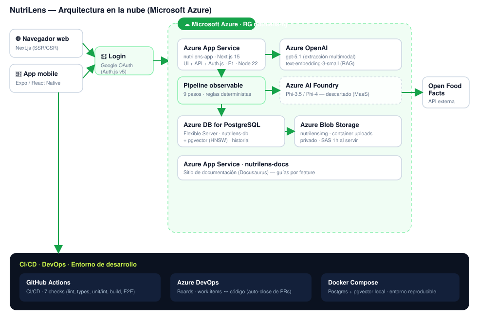

Departamento de Ingeniería e Investigaciones Tecnológicas
Inteligencia Artificial Aplicada (01-5900) — Docente: Ing. Damián Montefiori
Trabajo Práctico Integrador
Las secciones y subsecciones marcadas con NUEVO corresponden a desarrollo posterior al MVP documentado en la entrega parcial.
NutriLens es una aplicación inteligente que analiza etiquetas de alimentos a partir de imágenes o archivos PDF. El usuario sube una foto del frente del producto, de la lista de ingredientes o de la tabla nutricional, y el sistema extrae información estructurada, detecta posibles alérgenos, identifica sellos o advertencias, clasifica el nivel de riesgo del producto y genera una explicación simple y entendible.
La propuesta resuelve un problema cotidiano: muchas personas no logran interpretar rápidamente si un alimento es compatible con sus restricciones, preferencias o necesidades. NutriLens funciona como un asistente informativo basado en la información visible de la etiqueta; no reemplaza a un profesional de nutrición ni garantiza seguridad médica absoluta.
Este informe documenta la evolución del producto desde el MVP de la entrega parcial hacia una versión desplegada en la nube, ampliada y de extremo a extremo. Respecto del MVP, se sumaron: el despliegue completo en Microsoft Azure (web y documentación), autenticación con Google (OAuth), integración con Open Food Facts mediante código de barras, catálogo con filtro "Analizados por vos", un chat RAG con embeddings vectoriales, una aplicación mobile (Expo/React Native), un sitio de documentación (Docusaurus), un arnés de evaluación del modelo, una funcionalidad 3D experimental (NutriWorld) y un pipeline de CI/CD con cobertura de pruebas exigida.
Las etiquetas alimentarias suelen presentar información técnica, extensa y difícil de interpretar con rapidez. Un consumidor puede no saber si un producto contiene gluten, lactosa, ingredientes de origen animal, exceso de azúcar o componentes problemáticos para sus preferencias. Esto genera fricción en una decisión que ocurre muchas veces por día, frente a la góndola.
Diseñar y desarrollar una aplicación inteligente capaz de procesar etiquetas alimentarias mediante IA multimodal, extraer información relevante y ayudar al usuario a interpretar productos de forma clara, rápida y estructurada.
| Área | Qué se incorporó |
|---|---|
| Infraestructura | Despliegue completo en Azure (App Service web + docs, PostgreSQL Flexible, Blob Storage, Azure OpenAI). |
| Identidad | Login con Google (OAuth 2.0 / Auth.js v5); catálogo y conversaciones por usuario. |
| Precisión | Código de barras (EAN) + Open Food Facts como fuente autoritativa (validación soft). |
| Catálogo | Filtro "Analizados por vos", búsqueda y filtros combinables (riesgo, aptitud, categoría, alérgeno). |
| Chat | RAG con embeddings vectoriales (pgvector) además de la búsqueda por filtros. |
| Mobile | Aplicación nativa con Expo / React Native (cámara, catálogo, chat, perfil). |
| Documentación | Sitio Docusaurus con guías paso a paso por feature, desplegado en Azure. |
| Calidad | Pirámide de pruebas (unit/integración/E2E), gates de cobertura y arnés de evaluación del modelo. |
| Innovación | NutriWorld: supermercado 3D guiado por IA (beta, solo administradores). |
No se persigue diagnóstico médico, trazabilidad nutricional certificada ni cobertura exhaustiva de todas las marcas. El sistema es informativo y depende de la información visible en la etiqueta.
El componente central es un modelo multimodal (imagen + texto). A partir de la foto o PDF de la etiqueta, el modelo realiza la lectura visual del contenido, interpreta los campos y devuelve la información ya estructurada como JSON, evitando depender de un OCR tradicional seguido de reglas frágiles de parsing.
Un LLM cumple dos tareas: traducir la salida técnica a una explicación en lenguaje claro, y responder consultas sobre los productos guardados. El chat implementa RAG (Retrieval-Augmented Generation): primero recupera los productos relevantes y luego los entrega al modelo como contexto, de modo que la respuesta esté fundamentada solo en los datos disponibles. Respecto del MVP, la recuperación se reforzó con búsqueda semántica por embeddings: cada producto se vectoriza con text-embedding-3-small y se almacena en una columna vector(1536) con índice HNSW de pgvector, combinando relevancia semántica con los filtros por categoría/riesgo.
La elección del modelo fue un proceso de prueba y error:
NUEVO Para que ese cambio no implicara reescribir lógica, los proveedores de IA viven detrás de una única interfaz IaProvider con cuatro implementaciones: Mock, Foundry, Azure OpenAI y OpenAI. La migración de Phi-4 a gpt-5.1 se hizo cambiando solo variables de entorno, sin tocar la lógica de negocio. En CI se usa el Mock determinista para no consumir crédito.
Se construyó un arnés de evaluación propio: un dataset etiquetado (~35 archivos: fotos propias, productos de Open Food Facts e imágenes que no son comida), cada uno con su expected JSON. Un runner por línea de comandos calcula precision, recall, F1 y exact-match por campo (ingredientes, alérgenos, sellos, categoría, aptitudes, riesgo) y compara versiones de prompt (v1→v2). Si una métrica baja, el cambio no se mergea. Una corrida completa cuesta del orden de US$0,02.
IaProvider.El análisis es una secuencia de pasos, todos visibles en la UI, lo que transparenta cómo trabaja el sistema:
| # | Paso | Qué hace |
|---|---|---|
| 1 | validate_file | Valida tipo y tamaño del archivo. |
| 2 | detect_label_kind | ¿Es un producto/etiqueta? (antes del paso costoso). |
| 3 | extract_with_ia | La IA multimodal lee la etiqueta → JSON. |
| 4 | validate_schema | Valida el JSON con Zod (estricto). |
| 5 | enrich_with_off | Cruza con Open Food Facts si hay código de barras. |
| 6 | apply_rules | Reglas propias → aptitudes. |
| 7 | compute_risk | Fórmula propia → riesgo bajo/medio/alto. |
| 8 | generate_explanation | Explicación en lenguaje claro. |
| 9 | persist | Guarda el producto, el vínculo con el usuario y el trace. |
El catálogo y las conversaciones quedan asociados a cada usuario. Los productos son una base de conocimiento compartida (no llevan identidad); el vínculo "Analizados por vos" solo registra quién analizó qué. Las imágenes se guardan para mostrar el resultado y auditar el análisis.
El sistema dejó atrás el entorno puramente local del MVP y pasó a estar desplegado en Microsoft Azure, bajo el resource group nutrilens-rg. A continuación se detalla cada servicio utilizado.

nutrilens-app — aloja la app web Next.js (UI + API + autenticación). Plan App Service F1, runtime Node 22 LTS (Linux), despliegue por ZIP del output standalone.nutrilens-docs — aloja el sitio de documentación (Docusaurus), servido como estático con un server Node mínimo. Comparte el plan con la web (costo incremental nulo).nutrilens-db: base relacional con extensión pgvector habilitada (índice HNSW) para la búsqueda semántica del chat. Alojada en una región habilitada para la suscripción (north central US).nutrilensimg): container privado uploads para las imágenes de los productos; se sirven mediante SAS (URL firmada temporal, ~1 h) para no exponer el contenedor.gpt-5.1 (extracción multimodal + explicación/chat) y text-embedding-3-small (vectores para RAG).IaProvider.sub de Google). En mobile, la app intercambia el id_token de Google por un token propio firmado por el backend.requestId, sin PII) y trace del pipeline persistido para auditoría.@napi-rs/canvas faltantes en el runtime Linux del standalone.Cada push dispara un pipeline de GitHub Actions con siete checks requeridos: Lint & format, TypeScript, Mobile app, Next.js build, Unit & integration tests, E2E (Playwright) y un gate final CI Success. Ningún PR se mergea con un check en rojo.
Las historias de usuario y los work items se gestionan en Azure DevOps. El board refleja el código: al mergear un PR, el work item asociado se cierra automáticamente, manteniendo trazabilidad entre planificación y entrega.
El usuario sube una foto o PDF; el backend envía el archivo al modelo multimodal, normaliza el JSON, aplica las reglas, guarda el producto y muestra el resumen: riesgo, aptitudes, sellos, ingredientes, alérgenos y explicación simple.
Opcionalmente, el usuario agrega una foto del código de barras. El sistema decodifica el EAN y cruza con Open Food Facts: si el producto existe, completa nombre, categoría e ingredientes y sube la confianza. La validación es soft: el código de barras es un booster de confianza, nunca una barrera; si no decodifica, el análisis igual avanza.
El resultado muestra el mismo dato en varias vistas (semáforo de riesgo, aptitudes con íconos, sellos, alérgenos, explicación). Si la imagen no es una etiqueta, el sistema devuelve un error estructurado (image_not_supported) y permite reintentar.
Cada análisis queda en un catálogo filtrable por categoría, riesgo, aptitud y alérgeno, con búsqueda por texto. El toggle "Analizados por vos" filtra los productos que el usuario logueado analizó (vínculo usuario↔producto registrado de forma fail-open).
Ante una consulta (p. ej. "¿cuál tiene menos azúcar?"), el sistema recupera productos relevantes (por filtros + embeddings), los envía al modelo como contexto y responde con texto o con tarjetas/tablas, siempre fundamentado en lo guardado.
Funcionalidad experimental (beta, solo administradores): una góndola en 3D donde un avatar recorre el supermercado y NutriLens —en forma de robot— guía al usuario en lenguaje natural hacia los productos aptos, usando la misma IA del chat. Implementado con react-three-fiber.
{
"producto": "Galletitas Choco Crunch",
"categoria": "Galletitas dulces",
"ingredientes_detectados": ["harina de trigo", "azúcar", "aceite vegetal", "cacao", "leche en polvo"],
"alergenos": ["gluten", "leche"],
"sellos": ["exceso en azúcares", "exceso en grasas saturadas"],
"apto_vegano": false, "apto_celiaco": false, "apto_sin_lactosa": false,
"riesgo": "alto", "confidence": 0.94
}
Además de la web, se desarrolló una app nativa con Expo / React Native que consume la misma API. Cubre los flujos clave: cámara para analizar, catálogo con filtros y "Analizados por vos", chat RAG, perfil con preferencias y acceso a la documentación.
id_token por un token mobile firmado por el backend); modo de bypass para demos.| Código | Requerimiento |
|---|---|
| RF-01/02 | Subir imágenes y PDFs de etiquetas. |
| RF-03 | Validar si el archivo corresponde a un producto alimenticio. |
| RF-04/05/06 | Extraer ingredientes; detectar alérgenos y sellos visibles. |
| RF-07/08 | Clasificar aptitud (vegano/celíaco/sin lactosa) y calcular riesgo. |
| RF-09..12 | Explicación simple, guardado, catálogo y chat sobre lo guardado. |
| RF-13/14/15 | Errores estructurados; mostrar JSON extraído y pipeline. |
| RF-16 NUEVO | Autenticar con Google y asociar catálogo/conversaciones al usuario. |
| RF-17 NUEVO | Enriquecer por código de barras vía Open Food Facts. |
| RF-18 NUEVO | Filtrar el catálogo por "Analizados por vos". |
| RF-19 NUEVO | Disponer de app web y mobile desplegadas públicamente. |
| Código | Requerimiento |
|---|---|
| RNF-01/02 | Interfaz clara y responsive; estados de carga y error. |
| RNF-03/04 | Evitar afirmaciones médicas absolutas; aclarar dependencia de lo visible. |
| RNF-05/06 | Validar la salida del modelo (Zod) antes de guardar; JSON consistente. |
| RNF-08 NUEVO | Cobertura de pruebas exigida en CI (≥80% líneas en src/lib). |
| RNF-09 NUEVO | Secretos fuera del repositorio; acceso a imágenes por URL firmada. |
MockIaProvider.El CI exige gates de cobertura y corre con un proveedor de IA mock determinista (sin costo). Cada escenario Gherkin de una historia se traduce en al menos un test.
| Problema | Mitigación |
|---|---|
| Definir un producto innovador y abarcable | Acotar a un MVP demostrable con un caso de uso claro. |
| Selección del modelo (Phi-4 no rindió) | Interfaz IaProvider + migración a gpt-5.1 cambiando solo env vars. |
| El modelo alucinaba datos | Bajar la temperatura + validación Zod + reglas propias deterministas. |
| Respuestas con tono médico | Prompt anti-medical, sanitizer y disclaimer obligatorio. |
| Cobertura de Open Food Facts incompleta en LatAm NUEVO | Validación soft: el barcode suma confianza pero nunca bloquea el análisis. |
| Runtime Linux en Azure (Prisma engine, canvas) NUEVO | Inyectar binarios nativos faltantes en el standalone antes de empaquetar. |
| Regiones restringidas para PostgreSQL NUEVO | Desplegar la DB en una región habilitada para la suscripción. |
| OAuth de Google en Expo Go (SDK 54) NUEVO | Requiere development build; para demos rápidas, modo bypass. |
| Métrica | Valor |
|---|---|
| Tests automatizados en verde | ~1465 (unit + integración + E2E) |
| Story points · avance | 174 · 100% completados |
| Work items (Azure DevOps) | 182 |
| Pull requests mergeados | 61 |
| Commits | 342 |
| Pasos de pipeline trazables | 9 |
| Prompts de IA versionados | 16 |
| Tiempo de la foto al veredicto | < 5 s |
| Costo de una corrida de evaluación | ~US$0,02 |
NutriLens evolucionó de un MVP local a un sistema desplegado en la nube, multiplataforma y de extremo a extremo, con identidad, integración externa, evaluación medible del modelo y un pipeline de calidad. El desarrollo asistido por IA aceleró el diseño, la codificación, las pruebas y la documentación, y el proceso de selección del modelo dejó aprendizajes valiosos sobre las diferencias prácticas entre modelos multimodales.
Próximos pasos: CI/CD automático de los despliegues, app mobile distribuida (dev/standalone build) con OAuth real en dispositivo, comparador de productos más completo, y maduración de NutriWorld de beta a una experiencia estable.
Anexo A — Design system: paleta, tipografía y componentes base definidos para la interfaz. Anexo B — Diagrama de arquitectura: ver figura de la sección 7.
NutriLens es un asistente informativo y no reemplaza el consejo de un profesional de la salud.